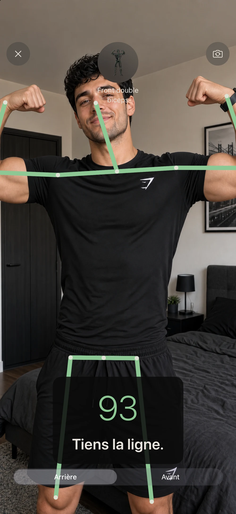

GUIDE · POSING
Commencer le posing bodybuilding
Le posing ne consiste pas seulement à prendre une photo flatteuse. C’est répéter une ligne, tenir une position et vérifier ce qui change d’une prise à l’autre.
Une séance courte en quatre temps
- Choisis une seule pose. La répéter dans les mêmes conditions rend la comparaison plus utile que changer de pose à chaque essai.
- Cadre tout le corps. Place l’iPhone assez loin pour voir tête, mains et pieds sans sortir du cadre.
- Prends la position, puis tiens-la. Regarde le retour visuel pour corriger un angle à la fois, sans chercher à bouger tout le corps en même temps.
- Compare après la séance. Regarde la ligne générale, la symétrie et la stabilité, puis note la correction à travailler demain.

Ce que le score peut — et ne peut pas — dire
PoseLock compare des repères corporels détectés par Vision à un modèle de pose. Il aide à répéter un cadrage et des angles plus constants. Il ne mesure ni la masse musculaire, ni la qualité d’une préparation, ni l’avis d’un jury. La lumière, les vêtements, l’occlusion et le cadrage peuvent modifier la détection.
Commence par une pose simple, puis passe au front double biceps lorsque ton installation est stable. Si tu t’entraînes sans partenaire, suis la méthode pour poser seul avec un iPhone.
Questions fréquentes
Faut-il un coach pour commencer ?
Non pour répéter et observer ta position. Un coach reste utile pour un retour technique ou une préparation de compétition ; l’app ne le remplace pas.
Pourquoi refaire la même pose ?
Parce qu’une comparaison n’a de sens que si la pose, le cadrage et la distance restent proches d’une séance à l’autre.
Pose. Score. Lock.
PoseLock montre tes repères en direct et garde une photo quand la position tient suffisamment longtemps. Voir comment fonctionne l’app.